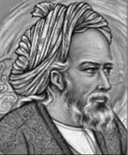

Ömer Hayyam 1044(?)-1124

Selçuklular devrinin önemli þair, filozof ve matematik alimi olar Ýran asýllý Ömer Hayyam'ýn doðum tarihi kesin olarak bilinmemektedir. Niþabur'da 1044-47 yýllarý arasýnda doðduðu tahmin edilmektedir. Sülalesinin çadýr yapým sanatý ile uðraþmasýndan dolayý çadýrcý anlamýnda olan "hayyam" ünvanýnýn verildiði tahmin edilmektedir. Kendi eserinde künyesini Ebü'l-Feth Ömer bin Ýbrahim el-Hayyamî olarak vermektedir.Kendisine ders veren hocalarýndan olan Beyhaki, Ömer'in baba ve dedesinin Niþaburlu olduðunu, çok kuvvetli bir hafýzaya sahip olduðunu, dil, fýkýh, tarih ve kýraat alanýnda kapsamlý bir bilgiye sahip olduðunu, matematik, týp ve diðer müspet ilimlerde eþsiz olduðunu nakleder. Bunun yanýnda kötü huylu olduðunu da belirtir.
Semerkant'ta yaþayan Ömer, daha sonra Ýsfahan'a giderek Selçuklu Sultaný Melikþah'ýn ölümüne kadar burada kaldý. Gerek Selçuklular gerekse Karahanlýlar kendisine büyük teveccüh gösterdi. Hatta Karahanlýlardan Þems el-Müluk'ün kendisini çok iyi karþýladýðý, onu tahtýna çýkararak yanýnda oturttuðu nakledilmektedir. Melikþah'ýn yanýnda da sohbet arkadaþý gibi (nedim) alaka gördüðü ifade edilmektedir. Ancak, daha sonra Sultan Sencer (Sancar) zamanýnda pek ilgi görmediði belirtilmektedir. Ömer Hayyam'ýn damadý olan Muhammed el-Baðdadi'nin Beyhaki'ye anlattýðýna göre, son günlerinde Ýbn Sina'nýn "Þifa" adlý eserini okumaktaydý. Eserin ilahiyat kýsmýný okuduðu esnada "bir ve çok" konusuna gelince vasiyette bulunmak üzere bazý kimseleri çaðýrmýþ ve vasiyetini yapmýþtýr. Yine bu rivayete göre akþam namazýndan sonra secdede ölmüþtür (1223-24).
Ömer Hayyam hakkýnda nakillerde bulunanlardan bazýlarý, onun için büyük bir þöhret sahibi ve eþsiz bir alim olarak, bazýlarý da bahtsýz bir filozof, Allahsýz bir maddeci þeklinde söz etmiþlerdir.
Ömer Hayyam'ýn ilim alanýndaki þöhreti þairlik yönünü uzun bir süre gölgede býrakmýþtýr. Celali Takvimi (Celaleddin Melikþah adýna atfen), Ömer Hayyam'ýn baþkanlýðýnda hazýrlanmýþtýr. Melikþah'ýn emriyle hazýrlanan bu takvim, güneþ yýlýný esas alýp, baþlangýç olarak 16 Haziran 632'yi kabul etmiþtir. Osmanlýlarda kullanýlmýþ bulunan "müneccimbaþý takvimleri"nin hazýrlanmasýnda Celali Takviminden istifade edilmiþtir.
Takvimde yaptýðý reformun yanýnda, üçüncü dereceden denklemleri inceleyerek, denklemlerin sýnýflandýrýlmasýný yaptýðý bir kitap yazdý. Kitabýnda, iki koniðin arakesitini kullanarak üçüncü dereceden her denklem tipi için köklerin bir geometrik çizimi bulunduðunu belirtip, bu köklerin varlýk þartlarýný tartýþtý.
Altýn ve gümüþün yoðunluðu hakkýnda da eser yazdý. Bu eserinde, kýymetli taþlarý bozmadan, bunlarýn yardýmýyla elde edilecek eþyanýn kýymetinin takdir edilmesi üzerinde durdu. Yönlerin tayin edilmesi, muhtelif kýtalarýn iklim deðiþikliklerinin sebepleri hakkýnda da eserler kaleme aldý. Bunlarýn dýþýnda metafizik konusunun iþlendiði varlýk hakkýndaki risalesi de mevcuttur.
Rubai yani iki bölümlü (beyitli) dizelerden oluþan þiirlerin ustasý olan Hayyam, halk arasýnda yaygýn bir þekilde kullanýlan bu eski nazým biçimini þüpheci düþünceleri dile getirmekte kullanan ilk þairdir. Onun adýna baðlý olarak bu dörtlük geleneði, özellikle Moðollarýn egemenliðinin sürdüðü dönemde geliþti. Kendisine atfedilen dörtlüklerin tamamý kendisine ait olmayýp, tahminen yüz kadarý gerçek olup kendisine aittir.
Ýran þairlerinin önemli bir özellikleri inançlarýný da þiirle açýklamalarýdýr. Felsefi düþünce de Hayyam'ýn rubailerinde ifadesini buldu. Nazým ve nesir göz önünde bulundurularak Ýran edebiyatý incelendiðinde karþýlaþýlan en önemli özelliklerin baþýnda, etkisinde kaldýklarý kiþiler belirginleþir. Bu manada Yunan düþüncesi ön plana çýkar. Etkilendikleri kiþilerin baþýnda Sokrates, Platon, Aristoteles, Plotinus, Stoacýlar, Zenon Felsefesi gelir. Bu felsefenin önemli bir özelliði, þüpheciliði ön plana çýkarmasýdýr. Hayyam'ýn içinde bulunduðu grup, þüphecilik ile Ýslami temeller arasýnda ahenk kurmaya çalýþmýþlardýr. Bunun yanýnda tasavvufu felsefe ve þeriat ile telif etmeye çalýþanlar da olmuþtur. (Said Nefisi, "Fars Edebiyatý", Terc. Halil Toker-Ali Güzelyüz, Ýslam Düþünce Tarihi, III. Cilt, s. 268)
Hayyam'ýn rubailerinde dile getirdiði fikirler ve duygularýndaki tenakuz, çeliþki hayatýný yazmýþ olan hemen herkesin dikkatini çekmiþtir. Kendisini tarif eden en önemli özelliðin, alaycý bir karamsarlýk ile zevkperestlik olduðu ifade edilmektedir. Ahiret inancýný reddeden ve haz duygusuna öncelik veren Hayyam'ýn, dünyanýn faniliði ile dünyadaki neþe kaynaðý durumlar arasýnda gel-gitler yaþadýðý; bedbinliðinin, karamsarlýðýnýn sebebinin bu gel-gitler olduðu, bu özelliðinin Arapça þiirlerinde daha belirgin olarak ortaya çýktýðý ileri sürülmektedir. (Ahmed Ateþ, "Ömer Hayyam", MEB Ýslam Ansiklopedisi, IX. Cilt, s. 479)
Ömer Hayyam ile ilgili Risale-i Nur'da önemli bilgiler verilmektedir. Burada verilen bilgilerle diðer kaynaklarda verilen ve þairin karamsarlýkla þüpheciliðini dile getiren bilgiler örtüþmektedir: "Yetimâne aðlayýþla mevsuf" olarak tarif edilen Ömer Hayyam'ýn, felsefe yoluyla bataklýða saplandýðý, o mesleðin nefs-i emmareyi okþayan zevkiyle çýkmaza girdiði ifade edilmektedir: "Hem, üdebâ-i Ýslâmiyenin meþhurlarýndan bedbînlikle mâruf Ebû'l-Alâ-i Maarrî ve yetimâne aðlayýþla mevsuf Ömer Hayyam gibilerin, o mesleðin nefs-i emmâreyi okþayan zevkiyle zevklenmesi sebebiyle, ehl-i hakikat ve kemâlden bir sille-i tahkir ve tekfir yiyip, 'Edepsizlik ediyorsunuz, zýndýkaya giriyorsunuz, zýndýklarý yetiþtiriyorsunuz' diye, zecirkârâne te'dib tokatlarýný almýþlar." (Sözler, s. 500)
Hayyam'ýn þöhretinin önemli sebeplerinden bir tanesi eserlerinin, rubailerinin bir çok dile çevrilmiþ olmasýdýr. Doðuda ve Batýda araþtýrmalara konu olup, eserlerinin yazma nüshalarý Batýnýn deðiþik kütüphanelerinde bulunmaktadýr. Onu Batýya tanýtan Edward Fitzgerald'ýn Ýngilizce'ye tercümesi olmuþtur. Eserleri Türkçe'ye de çevrilerek hayatý hakkýnda muhtelif yazýlar kaleme alýnmýþtýr. Farsça'dan yapýlan tercümeleri, Hüseyin Daniþ (1922), Abdullah Cevdet (1926), Hüseyin Rifat (1926), Rýza Tevfik Bölükbaþý (1945), Abdülbaki Gölpýnarlý (1953) gibi þahýslar tarafýndan yapýlmýþtýr.